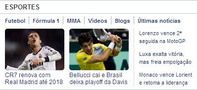
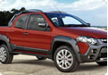
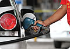
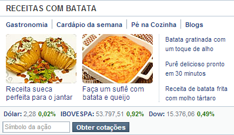

Exercício visual
Uma lembrança do Yahoo.
Reprodução composta pelos recortes de imagem do exercício original. O texto e os controles dentro das imagens fazem parte da captura e não são interativos.



